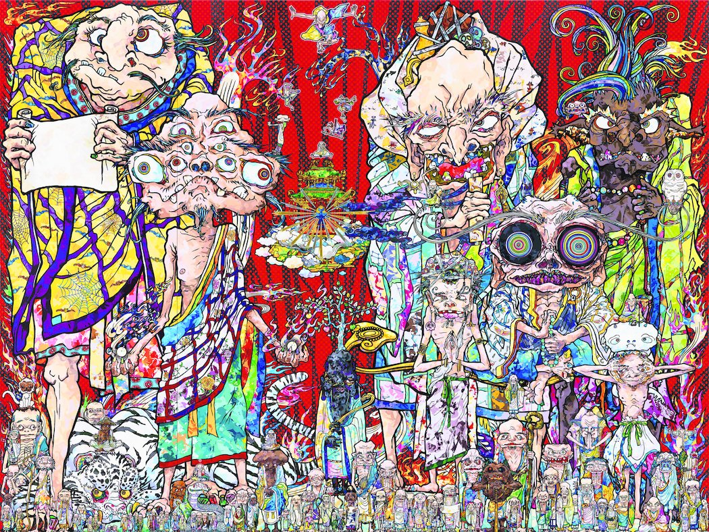

<!DOCTYPE html>
<html lang="en"></html>
<head>
    <meta charset="UTF=B">
    <title>I am inspired by</title>
</head>

<body>
    <header>
        <div class="topnav home">
            <ul>
                <li><a class="active" href="../index.html">Home</a></li>
                <li><a href="../reyes_hernandez_raiden_Inspiration\inspiration.html">Inspiration</a></li>
                <li><a href="../reyes_hernandez_raiden_topfive\Topfive.html">Top Fives</a></li>
            </ul>
        </div>
    </header>
    <h1>My name is Raiden Reyes Hernandez</h1>
    <h2>These three artists inspire me.</h2>
<a href="https://www.instagram.com/takashipom/">Takashi Murakami</a>
    <h3><em>takashi muakami</em></h3>
    
    <h4>he did the artwork for kanye wests graduation album and has an exhibit her in sf called monsters. his style is bold and colorful and radiates positivity.</h4>

    <h3><em>Rick Owens</em></h3>
    <a href="https://www.rickowens.eu/en/US/">Rick Owens</a>
    
    <h4>he is a faashion designer from my hometown of porterville california with a very minimalistic style. what inspires me about him is the fact that he comes from where i come from and was able to do what he loved. </h4>

    <h3><em>Pharrell Williams</em></h3>
    <a href="https://www.instagram.com/pharrell/">Pharrell Williams Work</a>
    
    <h4>anytime i hear that he has produced a song or had anything to do with the art direction of something i know its going to be good. he inspires me to be different in my approach to anything in terms of creativity.</h4>
</body>